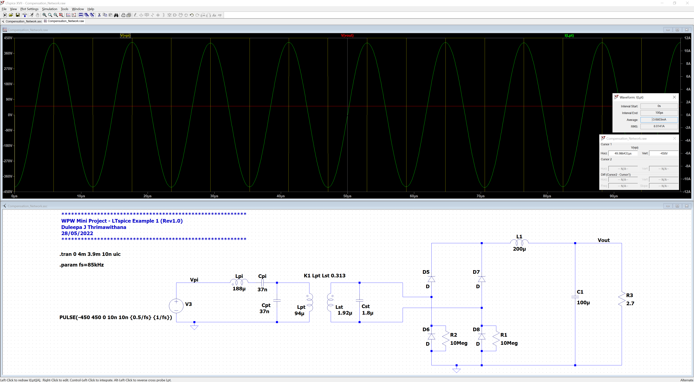

class: title-slide count: false .logo-title[] ## IEEE Wireless Power Week # Mini Assignment ### Specifications & Guidelines .TitleAuthor[Duleepa J Thrimawithana & Grant A Covic] --- layout: true name: template_slide .logo-slide[] .footer[[Duleepa J Thrimawithana](https://www.linkedin.com/in/duleepajt) & [Grant A Covic](), Department of Electrical, Computer and Software Engineering (2022)] --- name: S1 # The Application .left-column-s[ - Autonomous robots are increasing used in hospitals for various applications - These robots need to be charged in-between shifts - Wireless charging in an ideal solution for this application - Due to low ground clearance, these robots are typically charged through a wall mounted charger - It also simplifies the design, since this ensures little change in air-gap and y-axis alignment - In this assignment we will develop the magnetic couplers and the electronics for a 1kW wireless charging station for robots ] .right-column-s[ .center[ .credits[Wireless charging station for robots [[1]](https://industrytoday.com/wireless-charging-for-industry-4-0s-mobile-robots/)] ] ] --- name: S2 # Key Design Specifications <table class="tg" style="undefined;table-layout: fixed; width: 747px; margin-left:auto; margin-right:auto;"> <colgroup> <col style="width: 433px"> <col style="width: 314px"> </colgroup> <thead> <tr> <th class="tg-dzaw"><span style="color:white">Parameter</span></th> <th class="tg-dzaw"><span style="color:white">Value</span></th> </tr> </thead> <tbody> <tr> <td class="tg-jayl">Input DC Voltage</td> <td class="tg-jayl"> 450V</td> </tr> <tr> <td class="tg-sabo">Output DC Voltage</td> <td class="tg-sabo">52V</td> </tr> <tr> <td class="tg-ig71">Power Rating</td> <td class="tg-ig71">1kW</td> </tr> <tr> <td class="tg-sabo">Operating Frequency</td> <td class="tg-sabo">85kHz</td> </tr> <tr> <td class="tg-ig71">Operating Air Gap</td> <td class="tg-ig71">100mm</td> </tr> <tr> <td class="tg-sabo">X-Axis Misalignment</td> <td class="tg-sabo">± 40mm</td> </tr> <tr> <td class="tg-ig71">Y-Axis Misalignment</td> <td class="tg-ig71">0mm</td> </tr> <tr> <td class="tg-sabo">Maximum Coil Current Density</td> <td class="tg-sabo">4A/mm<sup>2</sup></td> </tr> <tr> <td class="tg-ig71">Maximum Ferrite Flux Density</td> <td class="tg-ig71">100mT</td> </tr> <tr> <td class="tg-sabo">Recommended Primary Compensation Topology</td> <td class="tg-sabo">LCL or LCCL</td> </tr> <tr> <td class="tg-ig71">Recommended Secondary Compensation Topology</td> <td class="tg-ig71">Parallel</td> </tr> </tbody> </table> --- class: title-slide layout: false count: false .logo-title[] # The Design Process ### Recommendations & Guidelines --- layout: true name: template_slide .logo-slide[] .footer[[Duleepa J Thrimawithana](https://www.linkedin.com/in/duleepajt) & [Grant A Covic](), Department of Electrical, Computer and Software Engineering (2022)] --- name: S3 # Step 1: FEM Model of the Couplers (PI) .left-column[ - An Ansys Maxwell model, which has a unipolar square primary coupler design, is provided to you - The coil of the primary coupler is sized to be 300mm x 300mm - The ferrite base is sized to be 350mm x 350mm - Initially, a 10mm thick ferrite base and a conductor diameter of 5mm is assumed - An inner to outer diameter ratio of 40% is used for the coil - Modify the Ansys Maxwell model to add a secondary coupler that is identical to the primary - Place the secondary coupler such that the air gap is 100mm and it is center aligned ] .right-column[ .center[] ] --- name: S4 # Step 1: FEM Model of the Couplers (PII) .center[<iframe width="800" height="450" src="https://www.youtube.com/embed/8_JAxLc0OhM" title="YouTube video player" frameborder="0" allow="accelerometer; autoplay; clipboard-write; encrypted-media; gyroscope; picture-in-picture" allowfullscreen></iframe>] --- name: S5 # Step 2: Worst Case Coupling (PI) .left-column[ - Move the secondary coupler such that it is misaligned in the x-direction by 40mm - This is because we want to simulate the worst case situation for coupling - Worst case coupling dictates the circuit parameters - As coupling increases, power converters are modulated to regulate power ] .right-column[ .center[] ] --- name: S6 # Step 2: Worst Case Coupling (PII) .center[<iframe width="800" height="450" src="https://www.youtube.com/embed/cL3elc9B_XI" title="YouTube video player" frameborder="0" allow="accelerometer; autoplay; clipboard-write; encrypted-media; gyroscope; picture-in-picture" allowfullscreen></iframe>] --- name: S7 # Step 3: Highest Primary & Secondary VA - Knowing the worst case coupling, we can now start to determine the highest VA we primary and secondary should be driven at since \\[P\_{o} = k \sqrt{\mathit{VA}\_{pt}\mathit{VA}\_{st}} \sin(\theta) \\] - As we have not specified any restrictions, we can assume the both the primary and secondary couplers can be designed to have similar Qs - Thus, to achieve best efficiency, `\( \mathit{VA}_{pt} = \mathit{VA}_{st} \)` - Lets also assume that we are going to compensate the system such that `\( \sin(\theta) \approx 1 \)` under worst case k - We can now determine `\( \mathit{VA}_{pt} \)` and `\( \mathit{VA}_{st} \)`, and in our example since `\( k = 0.313 \)` \\[P\_{o} = k \mathit{VA}\_{pt} = k \mathit{VA}\_{st} \quad \Rightarrow \quad \mathit{VA}\_{pt} = \mathit{VA}\_{st} = \frac { 1000} {0.313} \approx 3.2kVA \\] --- name: S8 # Step 4: Coupler Inductances - So far we simulated the couplers assuming only a single turn in the primary as well as secondary coils - To determine the number of turns, we need to first know the inductance we aim for in each coupler - Inductance required depends on the compensation strategy we aim to employ - Lets assume we plan to use LCL compensation in the primary and parallel compensation in the secondary \\[I\_{pt(RMS)} \approx \frac {2 \sqrt{2} V\_{in}} {\pi \omega L\_{pi}} = \frac {2 \sqrt{2} V\_{in}} {\pi \omega L\_{pt}} \quad \text{and} \quad I\_{st(RMS)} \approx \frac {\pi V\_{out}} {2 \sqrt{2} \omega L\_{st}} \\] - Since we know `\( \mathit{VA}_{pt} \)` and `\( \mathit{VA}_{st} \)` as well as `\( V_{in} \)` and `\( V_{out} \)` \\[L\_{pt} \leqslant \frac { 8V\_{in}^2 } {\pi^2 \omega \mathit{VA}\_{pt}} \quad \text{and} \quad L\_{st} \leqslant \frac { \pi^2 V\_{out}^2 } {8 \omega \mathit{VA}\_{st}} \\] - Based on the design specifications, we can calculate `\( L_{pt} \leqslant 96 \mu H \)` and `\( L_{st} \leqslant 1.95 \mu H\)` --- name: S9 # Step 5: Final Coupler Specifications (PI) - From the initial Ansys Maxwell simulations, per-turn inductance of the primary coil, `\( \mathit{AL}_{pt} \)`, and the secondary coil `\( \mathit{AL}_{st} \)` were similar due to their identical geometries and was, \\[\mathit{AL}\_{pt} = \mathit{AL}\_{st} = 0.48 \mu H \text{ per turns squared} \\] - Therefore, we can calculate the turns needed in the primary coil, `\( N_{pt} \)`, as 14 and the turns needed in the secondary coil, `\( N_{st} \)`, as 2, which theoretically result in \\[ L\_{pt} = 0.48 \times 14^2 = 94 \mu H \quad \text{and} \quad L\_{st} = 0.48 \times 2^2 = 1.92 \mu H \\] - The current in each coupler can be now found as \\[ I\_{pt} = \sqrt{ \mathit{VA}\_{pt} / \omega L\_{pt} } \approx 8A\_{rms} \quad \text{and} \quad I\_{st} = \sqrt{ \mathit{VA}\_{st} / \omega L\_{st} } \approx 56A\_{rms} \\] - Refine the Ansys Maxwell model to reflect these coupler specifications and simulate to obtain the final `\( k \)`, `\( L_{pt} \)` and `\( L_{st} \)` values both at X = 0mm and X = 40mm --- name: S10 # Step 5: Final Coupler Specifications (PII) .center[<iframe width="800" height="450" src="https://www.youtube.com/embed/Hf0AmImIqLw" title="YouTube video player" frameborder="0" allow="accelerometer; autoplay; clipboard-write; encrypted-media; gyroscope; picture-in-picture" allowfullscreen></iframe>] --- name: S11 # Step 6: Designing Compensation & Simulate (PI) - From the latest Ansys Maxwell simulation results we know expected `\( k \)`, `\( L_{pt} \)` and `\( L_{st} \)` values both at X = 0mm and X = 40mm - Using these values we can determine the parallel tuning capacitors needed in the primary and secondary - We can for example design the system to be tuned at X = 40mm \\[ C\_{pt} = \frac {1} {\omega^2 L\_{pt} } \quad \text{and} \quad C\_{st} = \frac {1} {\omega^2 L\_{st} } \\] - In a practical system, the LCL compensation network is required to have a series blocking capacitor to avoid DC circulating currents in case the primary inverter output voltage has a DC average - We can for example, add a series capacitor `\( C_{pi} \)` in series with `\( L_{pi} \)` such that \\[ \omega L\_{pt} = \omega L\_{pi} - \frac {1} {\omega C\_{pi}} \\] - We can now simulate this wireless charger in, for example, LTspice to investigate its performance --- name: S12 # Step 6: Designing Compensation & Simulate (PII) .center[] --- name: S13 # Step 7: Designing Controller (PI) - A short-circuit controller can be used in the secondary to control the power delivered to the battery in the robot - In this case both the primary inverter and the secondary short-circuit controller can be controlled to achieve best performance - This however leads to a quite challenging controller design - Since the variation of `\( k \)` in this design is quite small we can choose to only use the short-circuit controller and maintain the primary always at its maximum duty-cycle - As the final step of this project, develop a slow-switching short-circuit controller to regulate the output voltage of the secondary to 52V - Modify the LTspice model to validate the design - Model the battery of the robot as a load resistor that has a value between 2.7Ω and 5.4Ω - After concluding the project prepare a small presentation highlighting your findings --- name: S14 # Step 7: Designing Controller (PII) .center[<img src="img/Spice2.PNG" height="450">] --- name: S15 # Optional Further Improvements - You may wish to improve your design further and these improvements can be to the magnetic design, compensation topology, power electronics and/or control - In case of the magnetics, in a practical application the weight of the secondary needs to be minimized - You can investigate DD couplers and try to make the secondary coupler smaller than the primary by redistributing the VAs - In case of the compensation, in a practical design, having just 2 turns in the secondary can lead to poor `\( k \)` - We didnt observe this as the winding was modeled as a plate in Ansys Maxwell - One option can be to have a higher inductance in the secondary and use series compensation - Also when selecting the compensation components you can consider zero voltage switching conditions - In case of the power electronics, we should model the losses and ensure devices selected are suitable - You can improve the LTSpice model using device models provided by for example Wolfspeed and investigate losses in both the primary and the secondary converter --- class: title-slide layout: false count: false .logo-title[] # The End